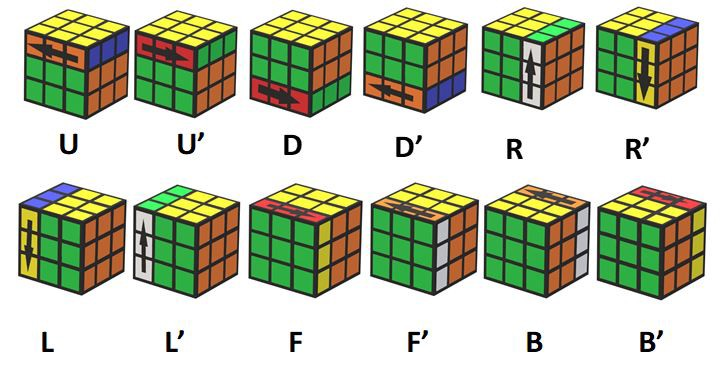
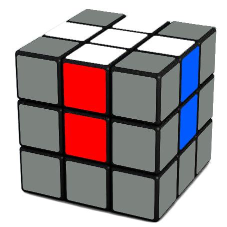
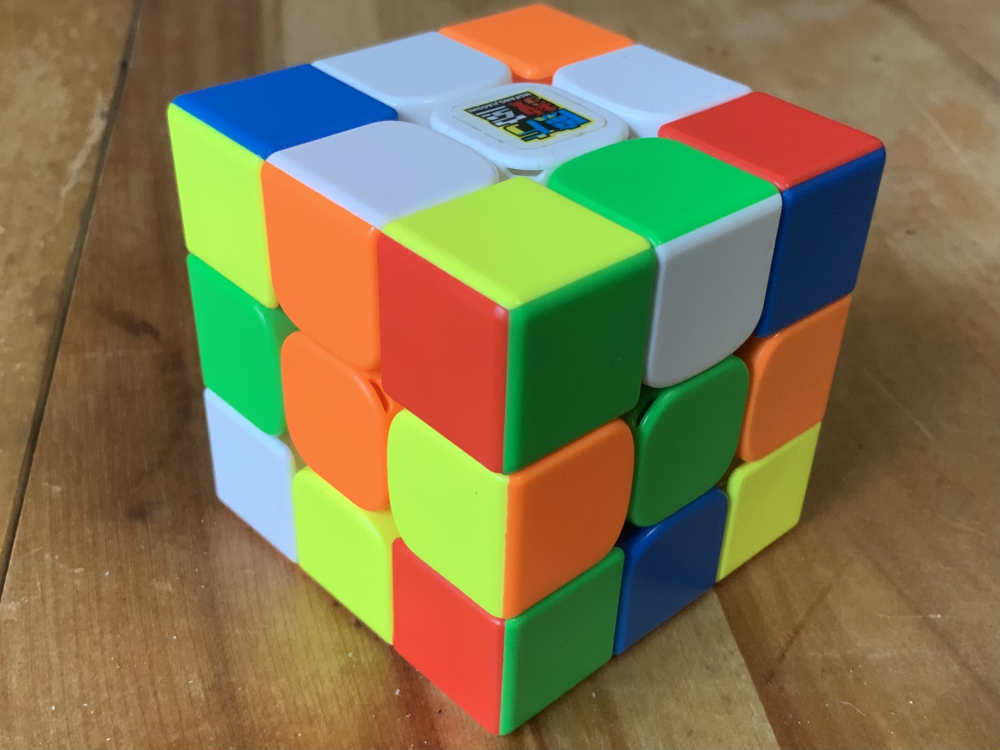

Dans cette page, je vous apprendrai comment lire un algorithme et résoudre le rubik's cube à partir de n'importe quel mélange
Tout d'abord, avant d'apprendre un algorithme, il faut savoir ce que c'est. Un algorithme est une séquence de mouvement permettant de partir d'un point A pour arrive à un point B. Tous les speedcubeurs utilisent des algorithme our résoudre leurs cubes. Mais avant de savoir faire un algorithme, il faut aprrendre à le lire. Tout d'abord, il faut comprendre que chaque lettre correspond à la rotation d'une face du cube: R est pour la face droite, L la gauche, U la face du haut, D la face du bas, F celle de devant et B celle de derrière. R, U et F sont des rotations en sens horaires (vers la gauche pour U et F et vers le haut pour R) et D, B et L des rotations anti horaires (L vers le bas, B et D vers la droite). Si vous avez un peu de difficulté à vous reperer au début, ne vous en faites pas! L'image ci-dessous est là pour vous aider à vous repérer. Il est important de noter que dans la notation du cube, on peut mettre un apostrophe ou un 2 derrirère la lettre indiquée. Le 2 signifique que l'on veut tourner la face 2 fois et l'apostrophe dans le sens inverse que celui de base (U' est donc une rotation en sens anti-horaire).

Sur l'image juste au dessus, nous pouvons voir l'effet de chaque rotation si nous avons la face verte devant nous et la jaune au dessus
Maintenant que je vous ai appris à lire un algorithme, je vais vous montrer comment résoudre le cube
La première étape de cette méthode débutante est celle qui sera le plus basée sur la compréhension du cube et «l'instinct». Le but de cette première étape est de faire ce que l'on appelle une croix sur la face du dessus. la croix est l'ensemble des quatre arrêtes de cette face bien placés. Voici le resultat que l'on désire obtenir:

Dans l'image que l'on vient de voir, il faut imaginer que chaque pièce grise correspond à une pièce mélangée. Nous les mettons grises car elles n'ont aucune importantce pour la première étape. Nous ne nous concentrerons donc que sur les 4 arrêtes blanches. ce sont les 4 pièces dotées de seulement 2 couleurs dont une blanche. Il y a 3 possibilité de positionnement. Soit elles sont déjà sur la face du haut, soit elle sont dans la tranche du milieu, soit elles sont sur la face du bas. Pour obtenir la croix, il faudra d'abord alligner les arrêtes blanche avec leur centre, qu'importe leur orientation. Pour cela, il faut d'abord voir si sur la face blanche il n'y a pas déjà une ou plusieurs arrêtes à leur place. Si on en trouve Une, alors on doit faire des U jusqu'à l'aligner avec les 2 centres qui sont les siens comme dans l'image A). Pour l'instant, l'orientation imoorte peu, donc si elle est à sa place mais que le blanc n'est pas vers le haut, ce n'est pas grave. Pour trouver et placer les prochaines arrêtes, il faudra les chercher du côté de la face jaune (D). Si vous em voyez une, tournez la face jaune afin de faire en sorte qu'elle soit alignée avec la couleur qui n'est pas la jaune (si par exemple vous trouvez sur la face jaune l'arrête blanc et rouge, tournez la face jaune pour la mettre dans sur le côté rouge et jaune) et tourner cette face (la rouge dans cet exemple) 2 fois (si le rouge est à droite, faites R2). Lorsqu'il ne reste plus aucune arête blanche ni sur la face blanche, ni sur la jaune, si toutes les pièces de la croix ne sont pas à leurs places, ça veut dire que la ou les dernières pièces sont dans la rangé du milieu. Quand vous en trouvez une, tourner le cube de sorte à positionner la face blanche en haut et la jaune en bas et que l'arrête mal placée soit en face à droite. Une fois cela fait, il suffira de faire l'algorithme R' D' R. Normalement la pièce qui était mal placée se retrouve sur la face jaune. Il ne reste plus qu'à la placer comme les pièces préceédents. Normalement, vous devriez obtenir, une fois toutes les arrêtes placées, un resultat similaire:

Je rappelle que le nombre d'arrêtes «flip», c'est à dire qui sont à leurplace mais mal orientées (la verte et blanche sur l'image) n'importe pas, nous apprendrons à les retourner dans l'étapes suivante, une à une. Si vous avez mal compris cete longue explication, aucun soucis! La vidéo suivant apporte un support visuel complet afin de mieux comprendre le fonctionnement de la croix.